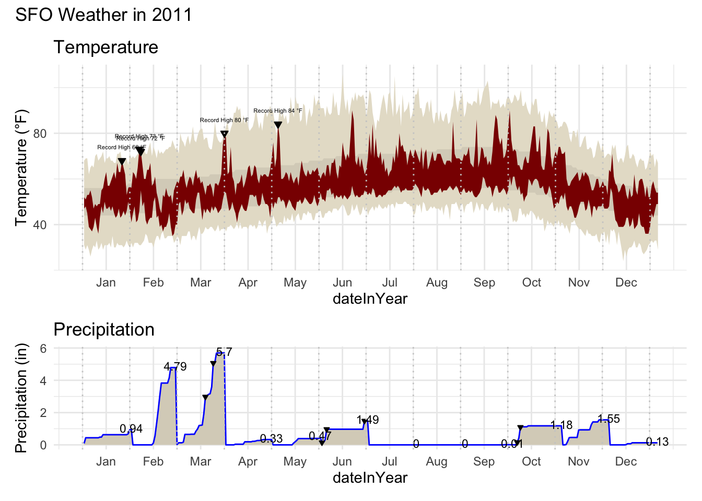

HW02-P1 Adv Data Viz
Instructions
Using ggplot2 and other tools in R, recreate the original New York Times graphic to the greatest extent possible. Try to get as close as possible to the figure below:

You will need to use reference pages and documentation to discover necessary tools. For example, you may want to Google search “ggplot multiple plots”. When looking through results, check publication dates and use newer references. Some helpful resources could include R documentation, Stack Overflow, and R cheatsheets.
Requirements
- Temperature graph
- Bands for the record, normal, and actual highs and lows are shown in the correct colors.
- Downward triangles point to the record high temperatures above the red band.
- Text displays the record high temperatures above the triangles.
- X-axis label: 3-letter month abbreviations appear in the middle of each month.
- Y-axis label: Tick marks at 0, 40, 80, and 120 only.
- Vertical lines separate the months.
- Title of “Temperature” is included.
- Precipitation
- Tan area and blue line reflecting the monthly cumulative precipitation is included.
- Text (number) for cumulative precipitation for each month is included at the end of each month just above the blue line.
- Downward triangles point to the record precipitation days.
- Vertical lines separate the months.
- Title of “Precipitation” is included.
- Overall
- Both the temperature and precipitation graphs are in one figure.
- The temperature plot takes up more vertical space than the precipitation plot.
- The title “SFO weather in 2011” is present.
- Resource reflection
- At least 1 resource is listed
- At least 3 sentences about resources and their helpfulness in the task
Bonus: If you’d like further practice, recreate the legend in the temperature graph that shows how the colored lines relate to record, normal, and actual highs.
Setup
Visualization
Code
# Code for recreating the visualization
# Use as many code chunks as you need to organize your work well
# Temperature plot
temp_plot <- ggplot(weather, aes(x = dateInYear)) +
# Record band (outer)
geom_ribbon(aes(ymin = RecordLow, ymax = RecordHigh), fill = "#e6e0cf") +
# Normal band
geom_ribbon(aes(ymin = NormalLow, ymax = NormalHigh), fill = "#d9d3c3") +
# Actual temps
geom_ribbon(aes(ymin = Low, ymax = High), fill = "darkred") +
# Downward triangles
geom_point(
data = weather %>% filter(High == RecordHigh),
aes(x = dateInYear, y = RecordHigh),
shape = 25, size = 1.5, fill = "black") +
# Text labels
geom_text(
data = weather %>% filter(High == RecordHigh),
aes(x = dateInYear, y = RecordHigh + 5,
label = paste("Record High", RecordHigh, "°F")),
size = 1.5, vjust = 0) +
# Vertical month lines
geom_vline(xintercept = seq(0, 365, by = 30), color = "grey80", linetype = "dotted") +
# Axes & labels
scale_x_continuous(breaks = seq(15, 365, by = 30), labels = month.abb) +
scale_y_continuous(breaks = c(0, 40, 80, 120)) +
labs(title = "Temperature", y = "Temperature (°F)") +
theme_minimal()
# Precipitation plot
precip_plot <- ggplot(weather, aes(x = dateInYear)) +
geom_area(aes(y = CulmPrec), fill = "#d9d3c3") +
geom_line(aes(y = CulmPrec), color = "blue") +
# Text labels at end of each month
geom_text(
data = weather %>% group_by(Month) %>% slice_tail(n = 1),
aes(x = dateInYear, y = CulmPrec + 0.1, label = round(CulmPrec, 2)),
size = 3
) +
# Smaller black downward triangles
geom_point(
data = filter(weather, RecordP == TRUE),
aes(x = dateInYear, y = CulmPrec),
shape = 25, size = 1, fill = "black"
) +
# Vertical month lines
geom_vline(xintercept = seq(0, 365, by = 30), color = "grey80", linetype = "dotted") +
scale_x_continuous(breaks = seq(15, 365, by = 30), labels = month.abb) +
labs(title = "Precipitation", y = "Precipitation (in)") +
theme_minimal()
# Combine plots
final_plot <- temp_plot / precip_plot +
plot_layout(heights = c(2, 1)) +
plot_annotation(title = "SFO Weather in 2011")
final_plot
Resources Reflection (required)
List the resources you used to help with this assignment then write 3-5 sentence reflection on which resources were most helpful in finishing this task.
Resources: - Class notes from Advanced Data Visualization lesson - ggplot2 documentation - Stack Overflow posts
Reflection: My class notes helped me remember how to layer the different geoms and use scales correctly. The ggplot2 documentation was useful for checking arguments and making sure I used the right syntax. I also looked at a few Stack Overflow posts when I got stuck with errors, and they gave me examples that I could adapt to my code. These resources made it easier to finish the plots and understand how to control the details. I spent some time adjusting the triangles and labels until they matched the figure we were trying to recreate, which helped me practice being patient with trial and error. By the end, I felt more comfortable combining several elements in one figure instead of only making simple plots.